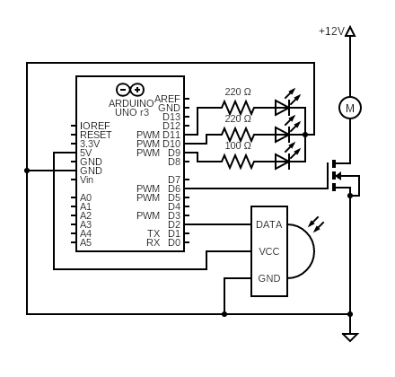
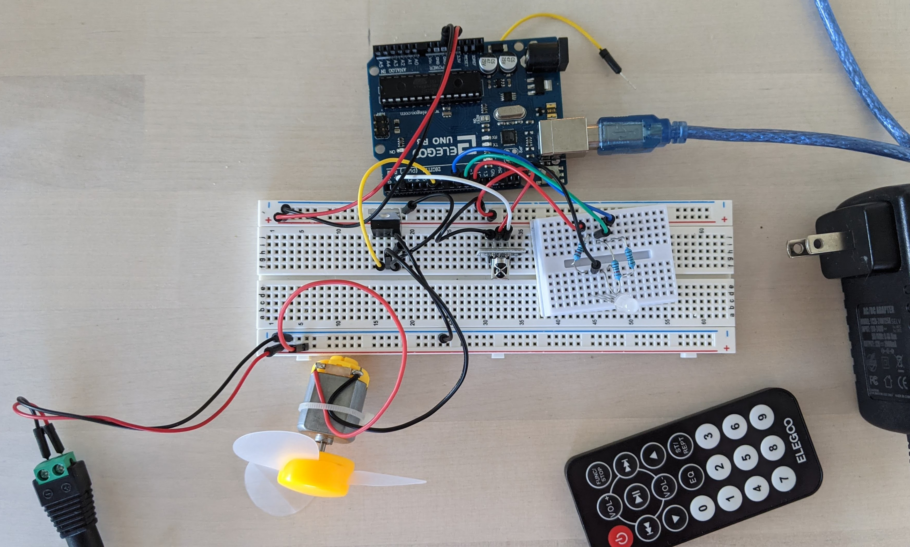

A5: High(er) voltage and transistors!
[Heating and] Cooling Device
Kierra Long
Schematic

This circuit uses a mosfet 30n06l (N) transistor with a fan motor as the load (from drain), arduino pin 6 connected to gate, and ground (wall) as drain.
Pin 6 is controlled by input from an IR sensor and remote, connected to pins 2, Arduino Ground and +5V.
Also determined by the input of the IR sensor is RGB LED, connected through resistors to pins 11, 10, 9, as well as Arduino Ground.
Resistor Rational:
For Blue LEDs:
(5V-3.3V)=(0.02A)(X)
(1.7V)=(0.02A)(X)
X=85 Ohms
Round up to 100 Ohm resistor.
For Green, Red LEDs:
(5V-1.8V)=(0.02A)(X)
(3.2V)=(0.02A)(X)
X=160 Ohms
Round up to 220 Ohm resistor.
Voltages:
The load is connected to a 12V AC adapter wall plug. This power goes throught the fan, and through the transistor and back out to ground.
There is also a 5V power source that comes from the arduino output pin. This goes to the transistor to open the gate and let the power flow through the fan's loop.
The 5V power pin is also used to power the IR sensor.
Created with https://www.circuit-diagram.org/
Circuit
This is the circuit based off of the previous schematic.
Code
// sources: IR Sensor code from lecture slides, help from Fungineers on YouTube
#include
#define heat 0xFF906F // define the up button
#define cool 0xFFE01F // dfinee thee down button
const int RECV_PIN = 2; //the pin of the IR Reciever
IRrecv irrecv(RECV_PIN); // recieving
decode_results results; // decode results
const int B = 9; // the number of the blue part of LED
const int G = 10; // the number of the green part of LED
const int R = 11; // the number of the red part of LED
int heatorcool = 1; //int for keeping track of heating or cooling
void setup() {
pinMode(2, INPUT); //initialize sensor pin
pinMode(11, OUTPUT); //initialize LED pins
pinMode(10, OUTPUT); //initialize LED pins
pinMode(9, OUTPUT); //initialize LED pins
//int buttonState = 0;
Serial.begin(9600);
irrecv.enableIRIn(); // set up IR reciever
irrecv.blink13(true); // set up IR reciever blink
}
void loop() {
if (irrecv.decode(&results)){ //if there is a button pressed
Serial.println(results.value, HEX); //print the button
switch (results.value) { // do something based on the result
case heat: // if up button was pushed
analogWrite(R, 255); // set red value
analogWrite(G, 45); // set green value
analogWrite(B, 0); // set blue value
digitalWrite(6, LOW); // turn to no voltage to transistor
break; //break from case
case cool: // if down button was pushed
analogWrite(R, 45); // set red value
analogWrite(G, 0); // set green value
analogWrite(B, 255); // set blue value
digitalWrite(6, HIGH); // turn to High voltage to transistor
break; //break from case
}
irrecv.resume(); //resume scanning
}
}
This operation uses the IR Remote sensing library to obtain and decode the button presses from the remote.
Operation

This is a Gif of the operation of the [Heating and] Cooling Device. The way this works is that
the up arrow on the remote initiates the "heating" mode (really it just turns on a warm-toned light),
and the down arrow on the remote operates the cooling mode, which turns on the fan and a cool-toned light.
The IR Remote sends a IR signal to the IR sensor, which is then decoded in the arduino code, and depending on
which button was pressed, either outputs LOW power or HIGH power to the gate of the transistor. The transistor gate opens when
the voltage is HIGH, which completes the circuit for the fan (the load of the transistor, connected to drain), which is connected to 12V power
from the wall.
Unresolved bugs:
I intended for this code to be able to toggle the fan on and off based on the remote up and down buttons,
however, after the cooling button was pushed, it would stop reading other buttons or acting on them. Because of this,
I was only able to turn the fan on once without having to re-upload the code to the Arduino. I was unable to
troubleshoot this.